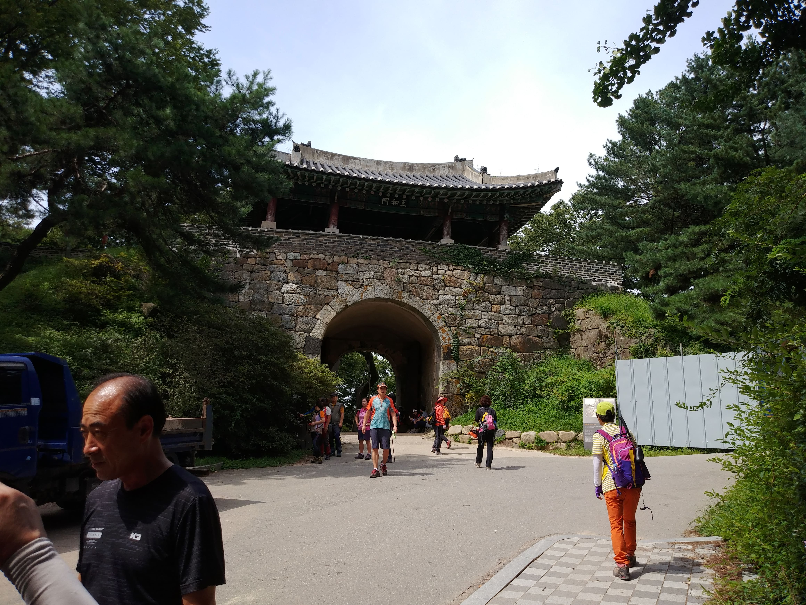
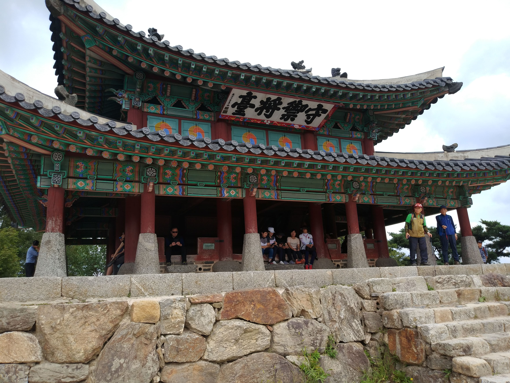
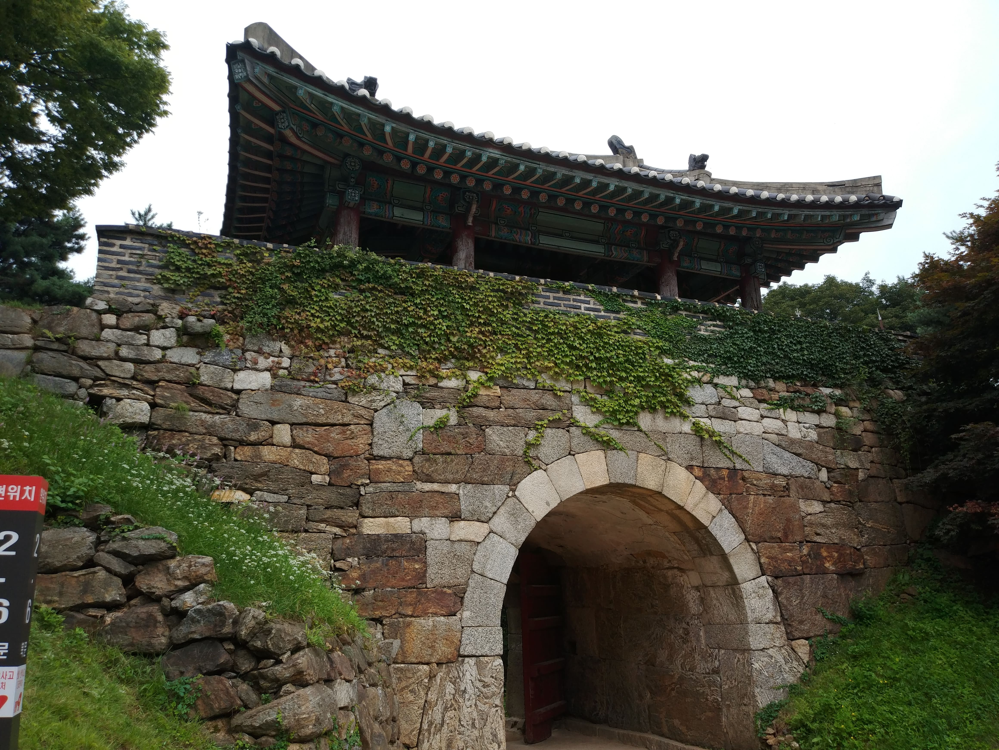
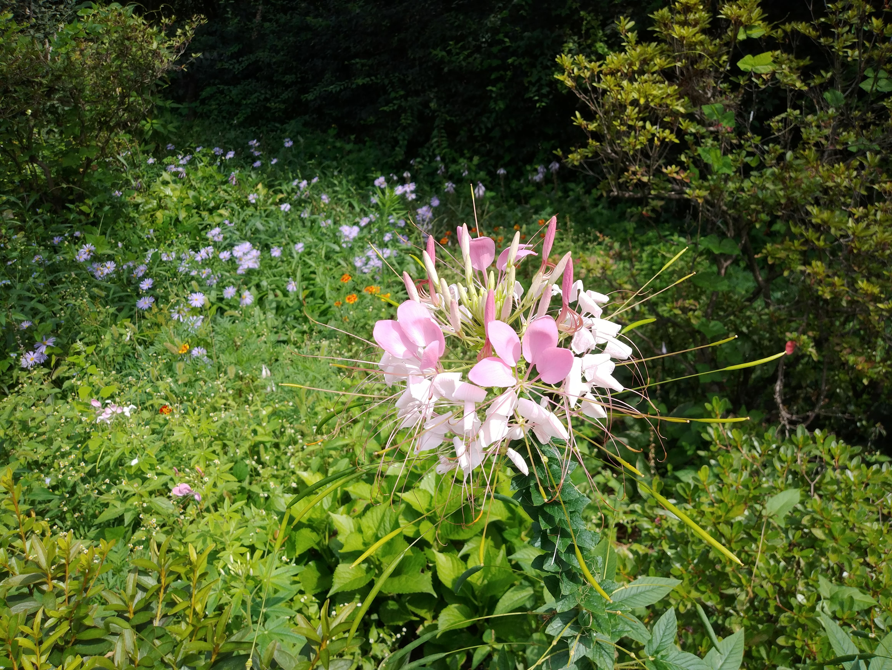
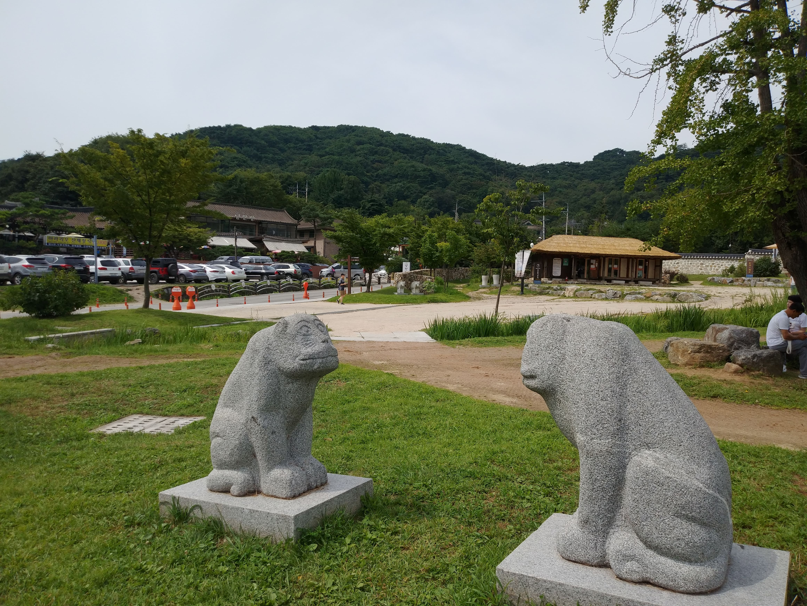
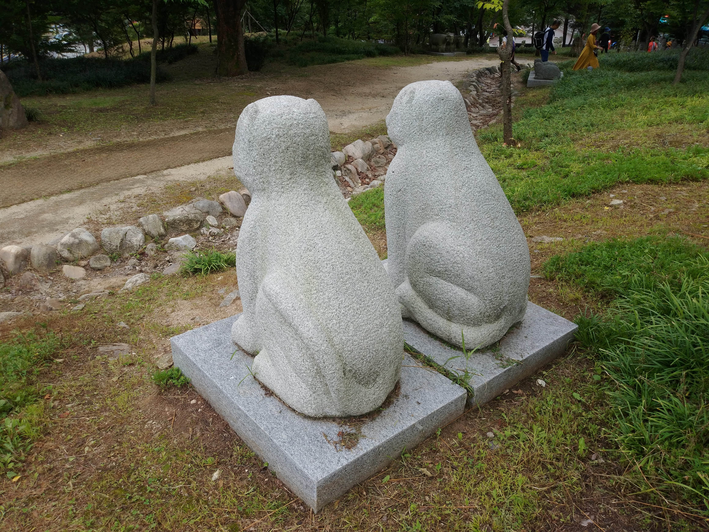
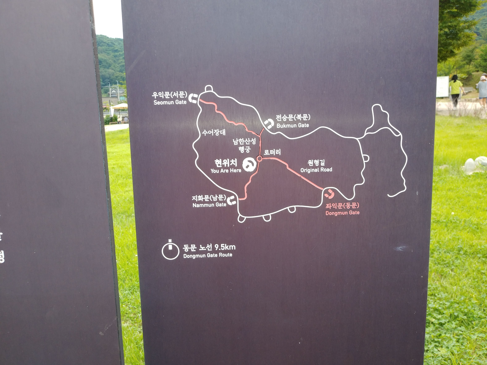

남한산성 기행문
병자호란 인조는 강화도를 포기하고 남한산성으로 피신했다. 남문으로 들어온 지 47일 만에 인조는 서문을 통해 삼전도로 나가 항복했다. 남한산성이 유네스코의 세계유산으로 등재됐다.일정 : 2019년 9월 1일
역사는 아이러니 하게도 승자의 역사다
병자호란을 당하고도 주전파는 승자로서 자신을 미화하였으나 대비없이 결국 일본에 침략당하는 굴욕의 역사가 되고 말았다.


청량당
어디나 설화가 있다
슬픈내용이다
성실한 사람이 잘되는건 아니다
그렇다고 나쁘게 살수는 없다

Fun
재미롭거나 인상적인 것

가을이 성큼
꽃이 아름답게 가을분위기를 느끼게 한다

로타리 근처 조형물
수호신인듯 상징적인 조형물이 출발지점에 있었다

또 다른곳의 조형물
뒷부분을 보면 꼬리 모양이 다르다

로타리 안내도
남한산성에 처음오시면 로타리 지도를 보면 쉽게 위치를 알수 있다